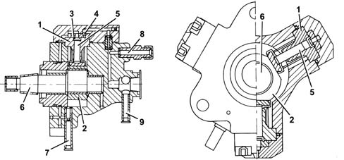
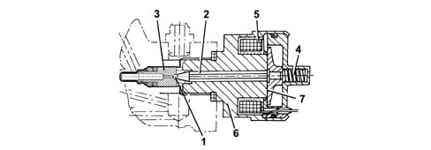

1060E DIESEL PRESSURE PUMP
- Path
- Descriptions > 10 ENGINE UNIT > 1060 DIESEL INJECTION SYSTEM > 1060E DIESEL PRESSURE PUMP
- Kind
- system description
- Applies to
- engines: 1.9 JTD 16V; all production periods
- Interactive page
- https://sloeber94.github.io/elrnDB-aGt/en/#/125000285
Applies to: engines: 1.9 JTD 16V; all production periods
COMPONENT DESCRIPTION
Pressure pump
Specifcations
Type
It is the 'radial jet' type with three radial pistons (total capacity 0.567 cm3) and is driven by the timing belt without requiring synchronization.
Structure
Each pumping unit consists of:
- a piston (5) operated by a cam (2) fixed to the pump (6) shaft;
- an inlet plate valve (3);
- a supply ball valve (4).
The pressure pump must be supplied with a pressure of at least 0.5 bar; so the fuel system has an auxiliary pump immersed in the fuel tank.
The maximum supply pressure reaches 1400 bar.
The pressure pump is lubricated and cooled by the same fuel by means of suitable ducts.

1 - Cylinder
2 - Cam
3 - Inlet valve
4 - Supply ball valve
5 - Piston
6 - Pump shaft
7 - Inlet - low pressure (from the fuel filter)
8 - Supply - high pressure (to the single fuel manifold)
9 - Supply - low pressure (to the fuel return manifold)
Pressure regulator
Specifcations
Structure
It is fitted on the pressure pump and is operated by the injection control unit and regulates the fuel supply pressure to the injectors.
The pressure regulator basically consists of:
- a spherical shutter (1);
- a pin (2) controlling valve (3);
- a pre-loading spring (4);
- a coil (5).

1 - Spherical shutter
2 - Pin
3 - Valve
4 - Pre-loading spring
5 - Coil
6 - Casing
7 - Keeper